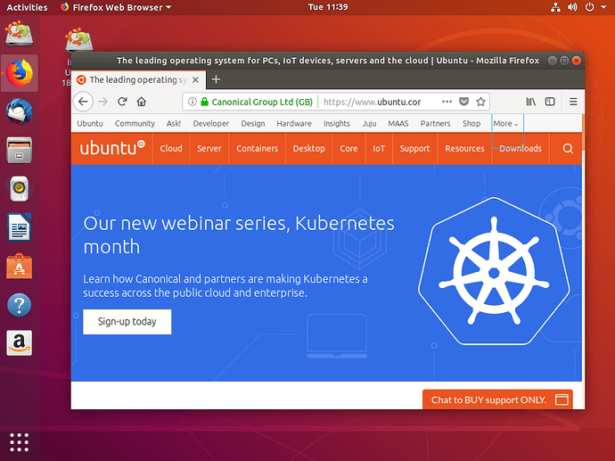

Οδηγίες Εγκατάστασης Linux (Ubuntu)
Τα Linux είναι ένα λειτουργικό σύστημα (όπως και είναι και τα Windows), τα οποία χρησιμοποιούνται στο linux_lab του τμήματος
Για την εγκατάσταση
- Αντικατάσταση των Windows με Linux
- Εγκατάσταση Linux, "παράλληλα" με τα Windows
Τα requirements για την εγκατάστασή τους είναι αρκετά χαμηλά και σχεδόν όλα τα pc μπορούν να τα υποστηρίξουν. Για να βεβαιωθείτε,
πατήστε εδώ.
Πριν από οποιαδήποτε άλλη κίνηση, θα χρειαστείτε ένα USB (τουλάχιστον 4GB αποθηκευτικού χώρου), ώστε να φορτώσετε το setup.
Αν φορτώνετε το setup από έναν υπολογιστή που τρέχει σε Windows, πηγαίνετε σε αυτό το link,
ώστε να κάνετε format στο USB και να βάλετε το .iso αρχείο σε αυτό. Αντίστοιχα, αν φορτώνετε το setup από έναν υπολογιστή που τρέχει σε Linux, πηγαίνετε σε αυτό το
link, για τον ίδιο σκοπό. Το link για να κατεβάσετε το .iso αρχείο είναι
αυτό.

Πλέον έχετε έτοιμο το USB σας για να εγκαταστείσετε τα Linux σε κάποιον υπολογιστή. Σβήνετε τον υπολογιστή που θέλετε να εγκαταστήσετε αυτό το λειτουργικό. Βάζετε το USB σε κάποια θύρα
και ανοίγετε τον υπολογιστή. Στην πρώτη οθόνη που σας βγάζει (οθόνη boot) πατήστε F12 ή F10 ή F2 (αν δεν σας γράφει η motherboard ποιο είναι το πλήκτρο boot). Εκεί θα σας πάει σε μια νέα
οθόνη που θα ξεκινήσετε την εγκατάσταση του Ubuntu.
Επιλέξτε το USB που βάλατε για να φορτώσετε το .iso από εκεί. Στην πρώτη οθόνη επιλέξτε γλώσσα (English προτείνουμε) και μετά "Install Ubuntu". Μετά, επιλέξτε γλώσσα πληκτρολογίου.
Στην επόμενη οθόνη επιλέξτε "Normal installation", "Download updates while installing Ubuntu" και "Install third-party software for graphics and Wi-Fi hardware and additional media formats"
και μετά "Continue". Εφόσον θέλετε μόνο τα Ubuntu ως λειτουργικό σύστημα επιλέξτε "Erase disk and install Ubuntu" και μετά "Install Now". Αλλιώς, άμα θέλετε να έχετε τα Ubuntu "παράλληλα"
με τα Windows επιλέξτε "Install Ubuntu alongside Windows 10" και μετά "Continue". Ρυθμίστε όπως θέλετε τον αποθηκευτικό σας χώρο και μετά πατήστε "Install Now".
Στην συνέχεια επιλέξτε την περιοχή όπου κατοικείτε και συμπλήρωστε τα username, password κλπ, όπως επιθυμείτε. Αφήστε τώρα το setup να κάνει τα υπόλοιπα και απλά ακολουθήστε τις τελευταίες
οδηγίες που σας δίνει (όπως να κάνετε restart).
Είστε έτοιμοι! Στην περίπτωση που κάνατε εγκατάσταση "alongside Windows 10", τότε κάθε φορά που ανοίγετε το pc, θα σας ζητάει να επιλέξετε ποιο λειτουργικό θέλετε να ξεκινήσει, αλλιώς
θα ξεκινάει αυτόματα το Ubuntu. Για οποιαδήποτε παραπάνω πληροφορία ή απορία εδώ
υπάρχει ένα ακόμα tutorial από το site του Ubuntu.